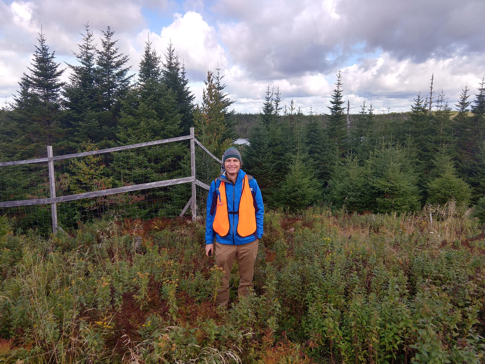

Moose in Atlantic Canada
Moose are an important species in Atlantic Canada to people and ecosystems. I am working with ecologists and economists to understand their importance.
Moose bioeconomics in Newfoundland
Moose are an important game species in Newfoundland and provide many benefits to the local economy. However, moose can also have negative impacts including moose-vehicle collisions or over-browsing. These competing interests mean that moose management can be improved by an accurate accounting of the benefits and costs of a given moose density. Such accounting can provide information on (1) better levels of moose hunting, forestry activities, and collision-prevention efforts, (2) an accounting price for moose via methods of natural capital valuation, and (3) any spatial heterogeneity in these properties. I am working with Eli Fenichel, Youpei Yan, and Shawn Leroux to develop new bioeconomic models for moose in Newfoundland. Our work was recently funded by the Smart Prosperity Institute.
A moose exclosure in Newfoundland measuring moose how moose effect soil nutrient cycling and biodiversity.
Moose ecological impacts in Newfoundland
Moose are non-native herbivores on the island of Newfoundland and their high abundance means that they have an large impact on the regrowth of forests. Since moose change the types of plants that regrow, 1 we also expect them to alter soil nutrient cycling and soil organisms. I am collaborating with Shawn Leroux and his lab to measure and model moose effects on soil nutrient cycling and biodiversity.